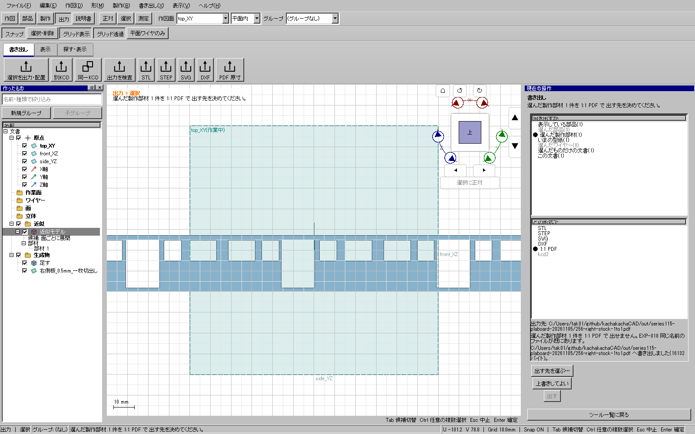

2026-11-09。DXF writerの限定修正は重点検証済み。全体・配布版検証と公開はこれから行う。
実UI252の側板はCAD上ではDXF出力に成功したが、外部読み込み器ezdxf 1.4.5は
missing AcDbSpline subclassで拒否した。内部の成功表示だけでは外部で使える証拠にならなかった。
SPLINEに必須のサブクラス記録がなく、版と単位も宣言していなかった。 AutodeskのSPLINE仕様と HEADER仕様に沿って、 AC1015、mm単位、固有ハンドルと各種類のサブクラスを記録する。円弧はCircleとArcの両サブクラスを持つ。 制御点・ノット・座標・レイヤー・円弧方向と非平面の拒否条件を変えず、曲線を折れ線へ置き換えない。
追加した2回帰は修正前に失敗し、修正後は出力26件が成功。 実UI256では同じ保存済み製作モデルを再読込し、型紙更新→SVG/DXF/PDFを通常の画面から再出力した。 6組とも外部読み込みのエラー0・修復0、mm単位を確認した。
| 部材 | 切断寸法 mm | 閉じた輪郭数 |
|---|---|---|
| 右側板・上部と裾を一枚へ接合 | 27.0062 × 216.75 | 15（外形1、窓11、扉3） |
| 左側板・上部と裾を一枚へ接合 | 27.0062 × 216.75 | 17（外形1、窓13、扉3） |
| 床板 | 34.3438 × 243.75 | 1 |
| 補強枠3枚 | 34.9 × 31.40003247 | 各2 |
右側板はLINE163・SPLINE7・ARC44、左側板はLINE171・SPLINE7・ARC52として読み込める。 全6組のSVGは以前の正しい出力とバイト一致し、PDFの描画内容もバイト一致。 床板PDFの縮尺注記は再読込時の初期値1/87から今回指定した1/80へ更新したが、原寸の図形は不変だった。
監査では非クランプB-splineの有効ノット区間だけを独立評価する。ezdxfのflattening補助は区間外まで外挿したため、 その結果をCADの曲線不良とは扱わない。有限標本によるSVG/DXF差は約0.000064 mm以下、SVG/PDF差は約0.000738 mm以下。 解析的最大誤差、全ての外部CADでの動作、実印刷・工作を証明するものではない。

証拠: out/series115-plaboard-20261105/255-dxf-before.xml、255-dxf-after.xml、
256-stock-external-format-proof.json、actual-candidate13-valid-dxf-stock-20261109-progress.json。
診断用に形式記録を補ったコピーは納品物に使わず、実CADの再出力を照合した。
全体・配布版ゲート、残りの全型紙と車体製作モデルは未完成。